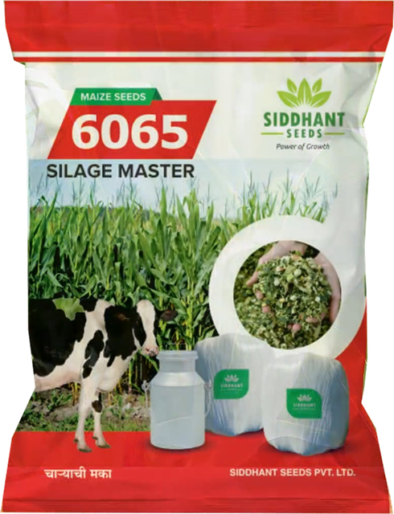
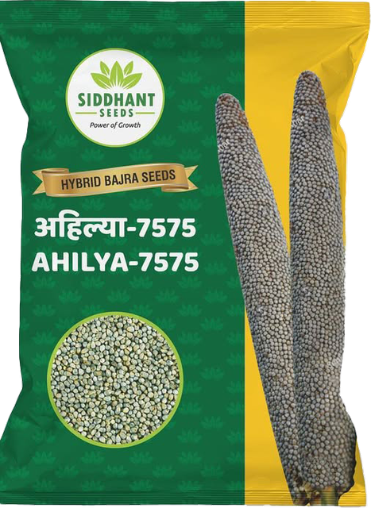
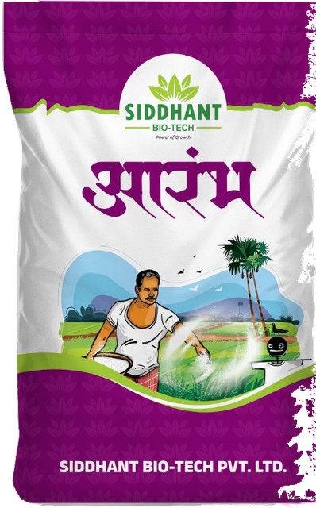

Five crops and a whole nutrition line
Onion
Superstar, Export Star, Megastar, Vardhan and Pinkstar, bred for both the market season and storage.

Wheat
Led by Pruthvi 234, our most popular researched wheat: short duration, long spike, attractive grain.
Maize
Single and double-cross hybrids for grain, plus Silage Master 6065 for green fodder.

Pulses
Digvijay gram from MPKV Rahuri, ready in 105 to 110 days, with Udid Vithal and Sakshi Tur.
Bajra
Ahilya-7575, a pearl millet hybrid for dryland farmers.

Nutrition
Aarambh soil conditioner, granules, micronutrients and the Unnati liquid range, made to work with the seed.

Before a packet reaches your shop, it has already lived a whole season
Every Siddhant seed starts in a partner farmer's field and ends in another's. Scroll through the six stops in between.
- Contract growers
Production plan
Our officers place orders with partner farmers for each variety and area, with purchase orders, weighment and clear payment schedules.
- Receipt and check
Every lot is matched to its order
Plant supervisors verify each lot against the order it was grown for before it is accepted.
- Processing
Cleaning, grading and treatment
At our own processing plant. Whatever is graded out goes back to the grower.
- Germination test
Checked at three stages, not one
A lot has to germinate well as raw seed, again after processing, and again once packed.
Raw ✓Processed ✓Packed ✓ - Packing and dispatch
To 200+ dealers in 8+ states
Labelled lots travel in our own vehicles to distributors and dealers.
- Harvest
Back in a farmer's field
The promise made before the season begins, kept at harvest.
Seed. Soil. Success.
Genetically pure seed from Siddhant Seeds, and crop nutrition from Siddhant Bio-Tech, working together in every field.
What are you sowing this season?
A family of agriculture graduates building seed for farmers
Siddhant Seeds Pvt Ltd was founded in 2015 by Kishor Navale, a BSc Agriculture graduate with a lifetime of experience serving farmers. The company procures seed from contract growers, then produces, processes, packs and markets it under its own brand.
- Own research varieties in onion, wheat, maize, pulses and bajra
- Contract seed production with farmers across our growing regions
- Our own processing plant, with germination testing at every stage
- A network of 200+ dealers across 8+ states
A seed is a promise made to a farmer before the season begins. We keep it by testing every variety in real fields and checking every lot, so that each acre sown with Siddhant grows with confidence.
Want to sell Siddhant seed in your area?
We are adding dealers and distributors across our states. Tell us about your shop and the crops your farmers grow.